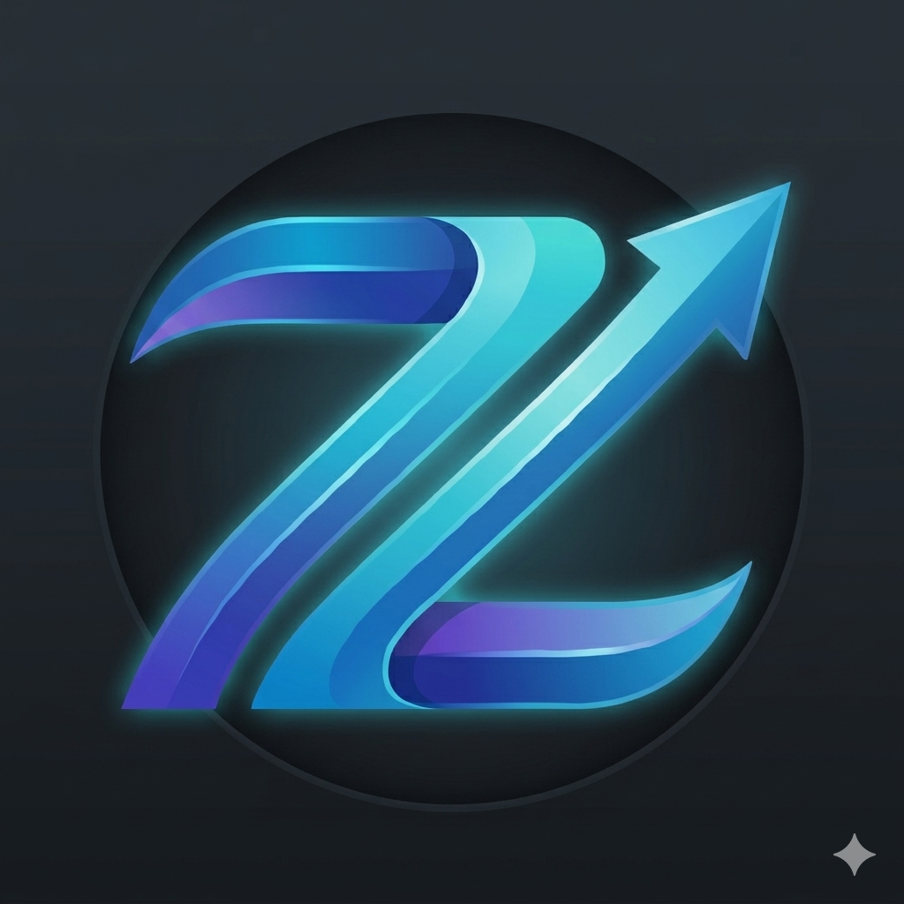
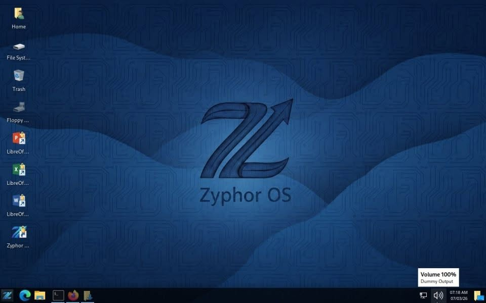
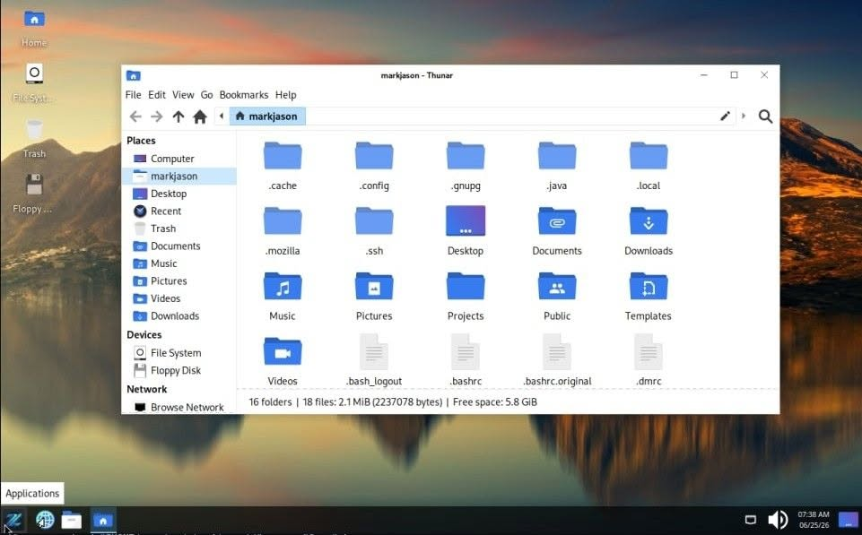
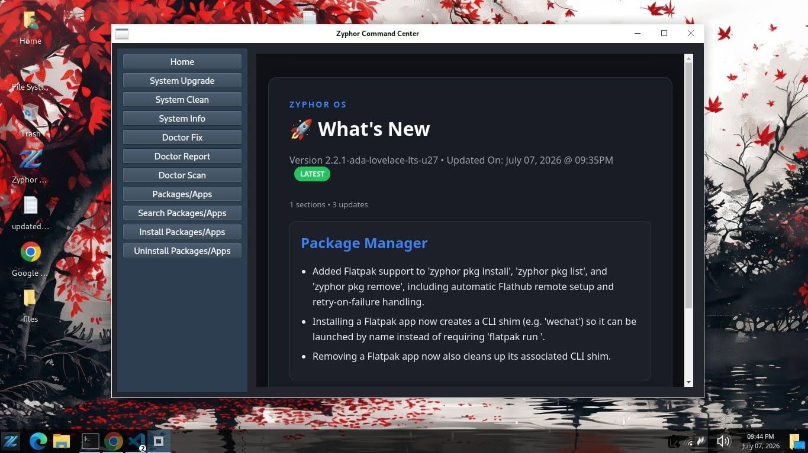

Learn.
Build.
Create.
Your Zyphor buddy!
Download Latest Releases:
Desktop - ...
Horizon - v1.0.0-beta-2026.06.14-r1
Server - ...
Minimal Version (Skeleton) Codebase

Why Zyphor OS?

- Learning-Oriented: The creator of Zyphor OS developed a minimal version of the operating system to help users learn how Linux is built, from kernel space to user space.
- Debian/Kali Based: Zyphor OS is built on the stability of Debian and the security-focused tools of Kali Linux, providing a lightweight, customizable, and developer-friendly Linux distribution.
- Actively Maintained: Zyphor OS is continuously developed with regular updates, bug fixes, performance improvements, and new features to ensure a reliable and up-to-date user experience.
- Open Source: Zyphor OS is open source, allowing anyone to inspect, modify, and contribute to its development.
- Community-Driven: Learners, developers, and curious minds are welcome to join the Zyphor OS community, share ideas, report issues, and contribute to the project.
- Complete Office Suite: Zyphor OS includes the full LibreOffice suite by default, providing powerful tools for word processing, spreadsheets, presentations, databases, formulas, and vector graphics.
- Own Ecosystem: Zyphor OS includes its own ecosystem of tools, packages, repositories, and utilities designed to provide a consistent and integrated user experience.
Philosophy & Vision
Created By: Mark Jason P. Espelita
- Minimal and Controlled Environment: Zyphor OS is designed to include only the essential components needed for a fast, stable, and efficient system. By reducing unnecessary software and background services, users gain greater control over their environment while maintaining the flexibility to install only what they need.
- CLI Abstraction Layer: Zyphor CLI simplifies Linux administration with a unified and easy-to-use command interface.
- Unified Package Management: Manage applications through a centralized app registry with a consistent and simplified package management experience.
- Independent Package Ecosystem: Zyphor OS maintains its own ecosystem of packages, repositories, and system components.
- Branding and Identity: Zyphor OS delivers a distinct identity through its own branding, design language, tools, and user experience.
- Educational and Learning-Oriented Design: Zyphor OS is designed to help users learn Linux through a minimal, transparent, and hands-on environment.

Release Format

Zyphor OS follows a semantic versioning-based release format designed to provide clear information about the version, release date, ISO refresh cycle, and internal package updates.
- Standard Release (New format introduced on May 22, 2026):
vx.x.x-yyyy-mm-dd-rx- vX.X.X - The main semantic version number representing major, minor, and patch releases.
- yyyy-mm-dd - The official release date of the ISO.
- rx - ISO refresh number, indicating how many times the ISO image has been rebuilt or refreshed after the initial release.
- LTS Release:
vx.x.x-lts-codename-ux- vX.X.X - The main semantic version number.
- LTS - Indicates a Long-Term Support release.
- Codename - The official release codename assigned to the LTS version.
- ux - Internal update revision number, representing how many times Zyphor OS packages and system components have been updated and released within the LTS cycle.
Release Policy
Zyphor OS follows a structured release policy to provide predictable updates, long-term stability, and continuous improvement.
- LTS Release Cycle: A new Long-Term Support (LTS) release is planned every 6 months, introducing new features, improvements, and updated system components.
- LTS Support Period: Each LTS version will receive maintenance, security updates, and bug fixes for 5 years after its initial release.
- LTS Codenames: Zyphor OS LTS releases use alphabetical codenames. Each LTS release follows the next letter of the alphabet, starting with A for Ada Lovelace, followed by B, C, and so on for future releases.
Releases
Available Zyphor OS release versions.
Project Team
The people behind the development and maintenance of Zyphor OS.
Creator And Lead OS Maintainer
Loading...
@loading
0
Followers0
Following0
Repositories📍 Unknown
View GitHub ProfileContributors
Developers and community members who contribute to Zyphor OS.
100%
Open Source
Linux
Powered Foundation
∞
Learning Potential
The Future Belongs To Builders
Most people consume technology. Zyphor users learn how to create it.
Get Started Now